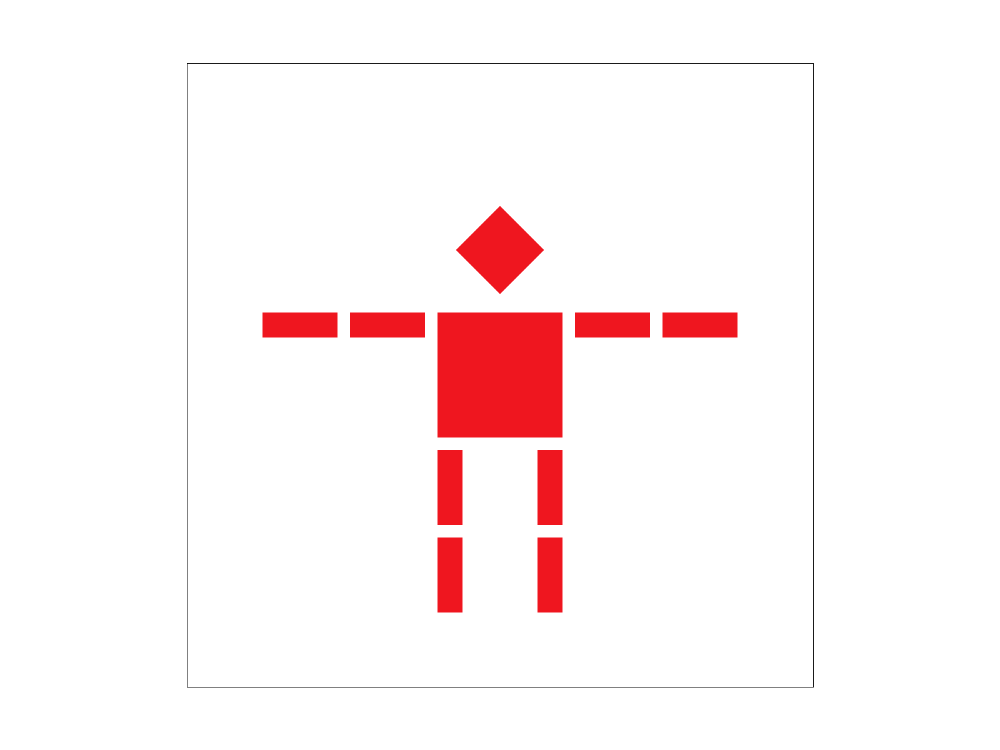
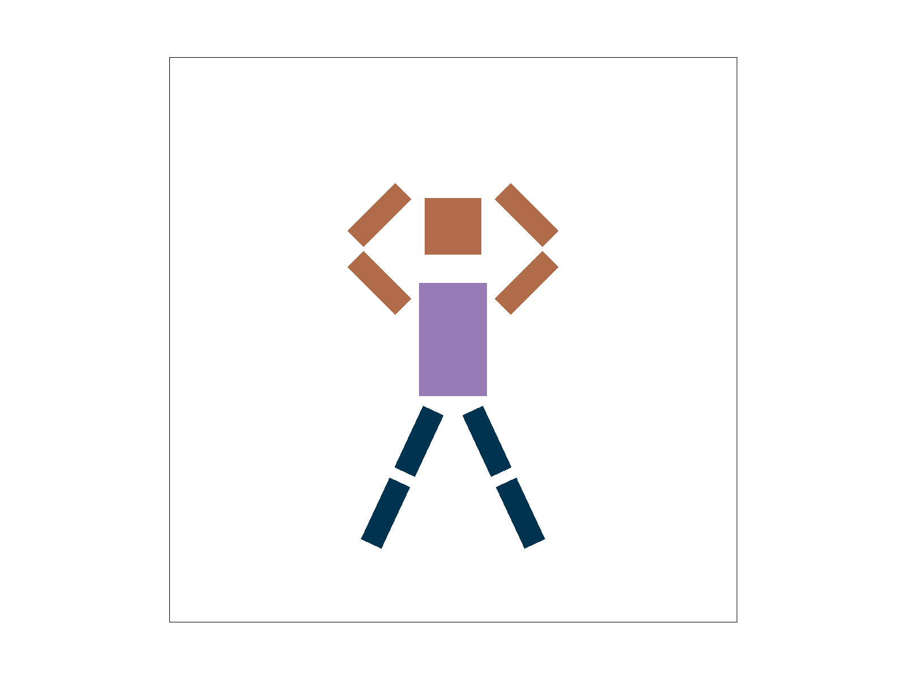
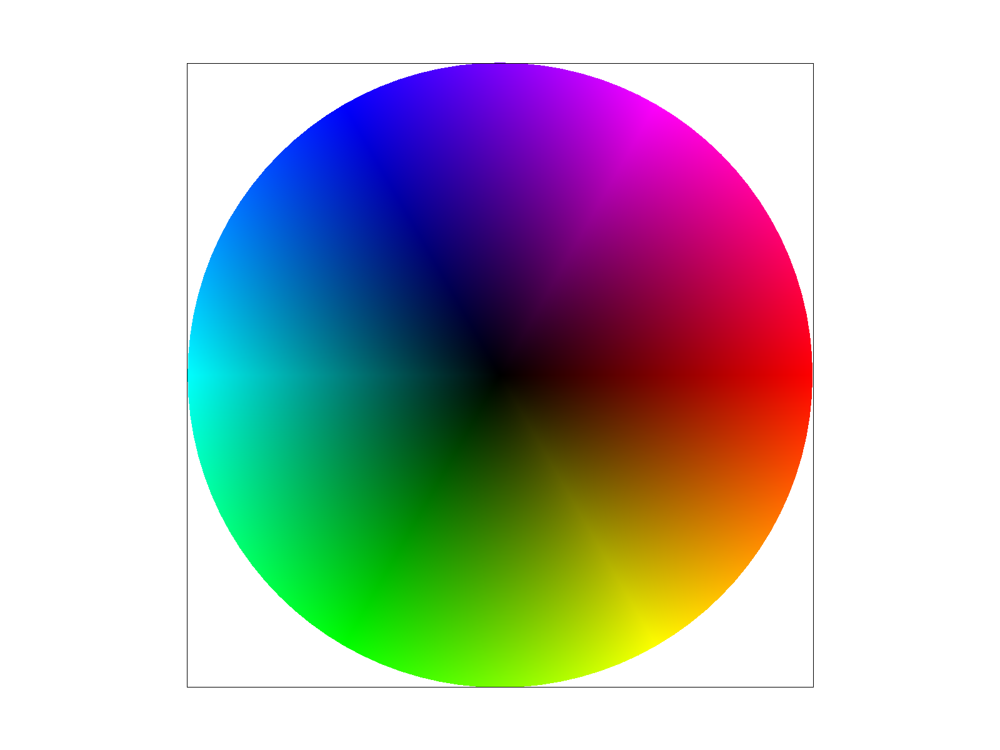
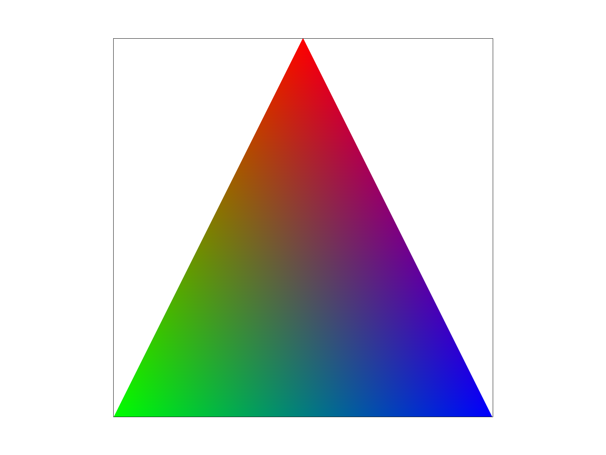
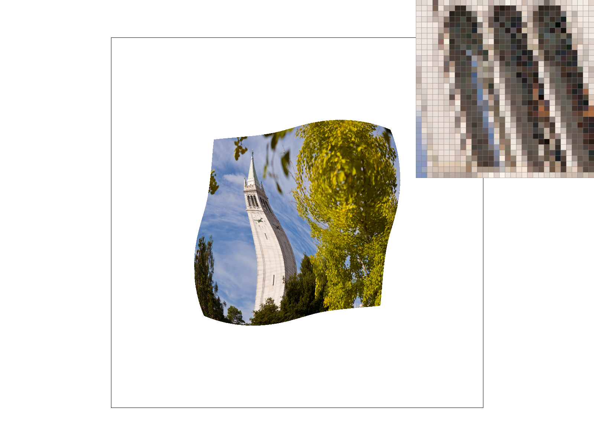
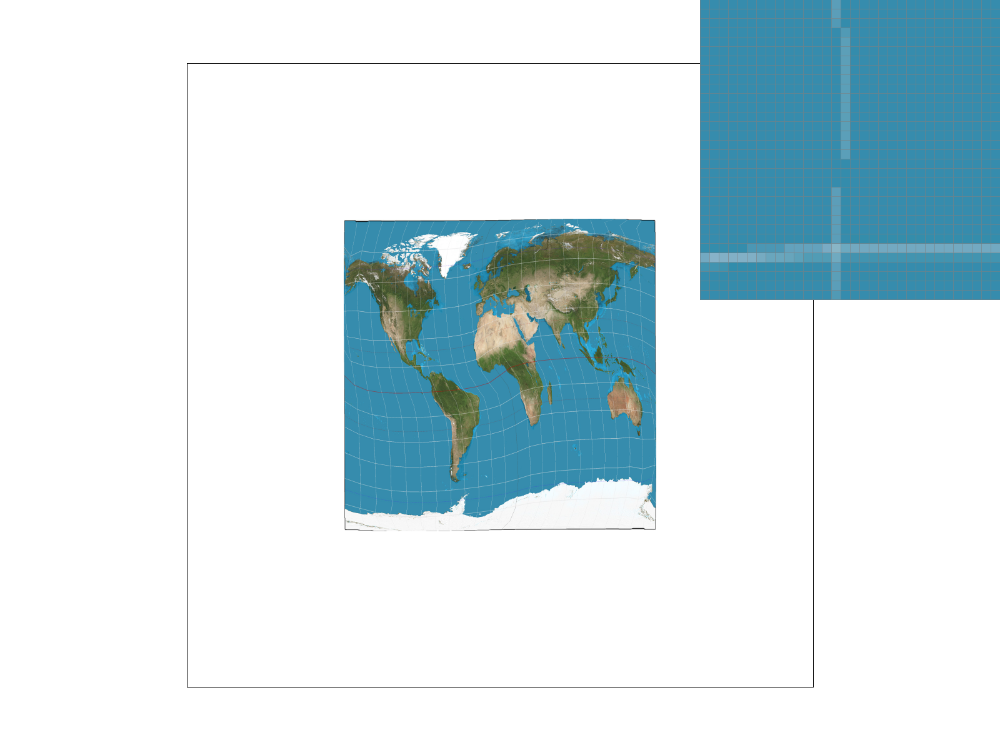
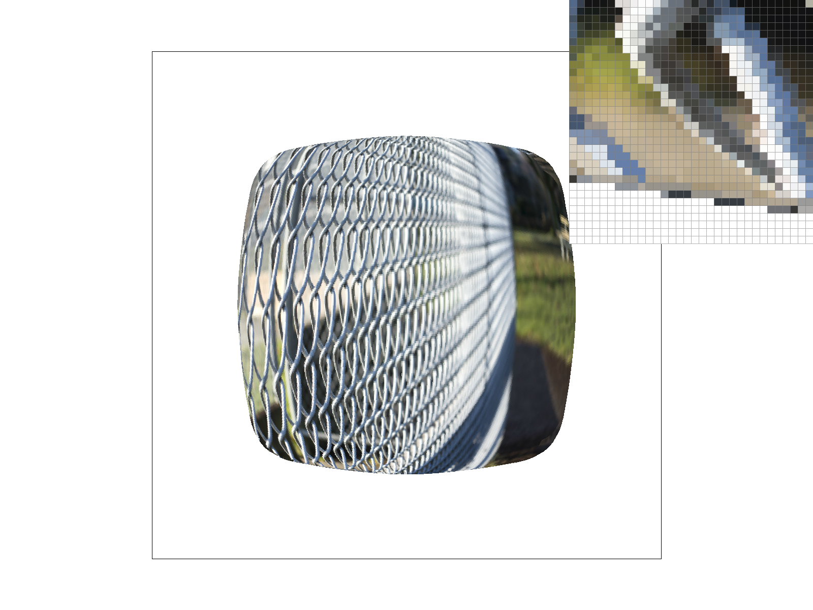
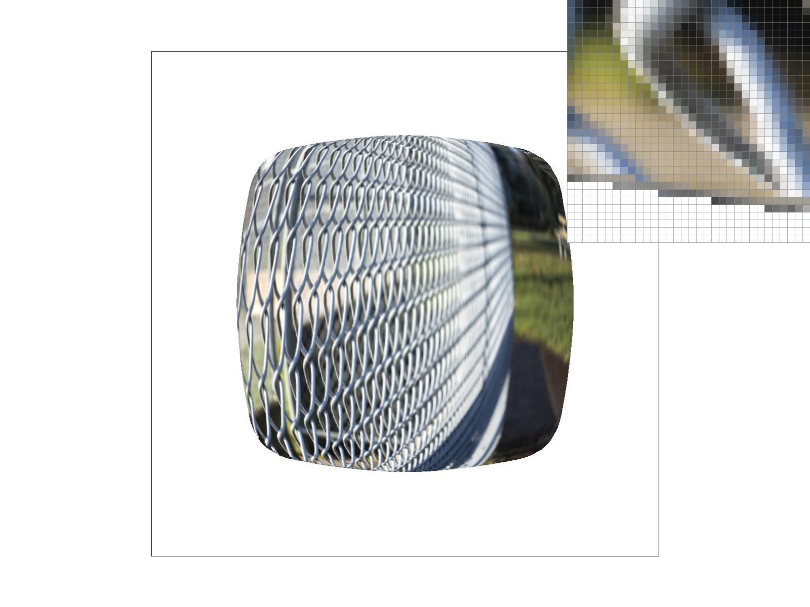

CS184/284A Spring 2026 Homework 1 Write-Up
Link to webpage: sriyakalyan.github.io/cs184/hw1/index.html
Link to GitHub repository: github.com/cal-cs184-student/hw1-rasterizer-pekingduckz
Overview
In this project, I developed a rasterizer through a series of steps. I began by drawing single-color triangles by using bounding boxes and edge functions to fill pixles in. Adding supersampling allowed me to reduce aliasing effects and create smoother shapes. Geometric transformations allowed me to manipulate shapes through translation, scale, and rotation.
Next, I added barycentric coordinates to implement smooth color interpolation across surfaces. This led to texture mapping where I implemented various sampling methods to retrieve colors from textures.
At the end of this homework, I gained a deeper understanding of pixels and textures and how they can be discetized. It was interesting to compare different approaches and algorithms and think about key tradeoffs between efficiency and aesthetics.
Task 1: Drawing Single-Color Triangles
To rasterize a triangle, I begin by creating a bounding box by taking the maximum and minimum x and y values of the 3 vertices of the triangle. The bounding box is the smallest rectangle that can fully contain the triangle.
To account for any points that may fall outside of the frame, I clamp the bounding box further using the height and width of the framebuffer.
For each pixel within the bounding box, I sample at the center of the pixel using (x + 0.5, y + 0.5).
To determine if a point lies within the triangle, I use edge functions.
For each edge, the edge function computes a signed value informing me whether the point lies to the left or the right of the edge.
However, I also need to calculate the signed area of the triangle. Triangles whose vertices are listed counterclockwise have a positive area while clockwise triangles have a negative area. The signs of all three edge functions must match the signed area of the triangle.
If all these conditions are satisfied, then I fill in the color of the point.

|

|

|

|

|

|
Task 2: Antialiasing by Supersampling
To implement supersampling, I began by modifying the way in which colors are stored. Previously, each pizel held a singular color value. To account for the many samples within each pixel, I introduced sample_buffer with a size of width × height × sample_rate to store multiple color samples.
During the rasterizing process, the edge functions are calculated at each subsample and the color is stored in the corresponding place in the sample buffer.
Supersampling is useful because it reduces the aliasing effects when we project a continuous geometric shape on a discrete pixel grid. When we don't supersample, each pixel is either within the triangle or outside the triangle. This can result in the jagged or discountined edges that we saw in Task 1. By introducing sub-sampling and averaging the samples, we smooth out these effects and allow for pixels to be partially covered. This produces a visibly smoother boundary and transition.
When we compare the screenshots of different sampling rates, we see that higher sample rates result in smoother transitions. By increasing the sampling rate, we get closer to the true image because of better approximations of the continuous signals. This does cost more computation.

|

|

|

|

|

|

|

|
Task 3: Transforms
After implementing the transformations in transforms.cpp, I quickly sketched out an idea of what I wanted my robot to look like. Because I had spent all day in bed, I decided to draw a cutesy sleeping position. After sketching it out, my robot looked like it was doing a jumping jack so now it's formally called "A Skinny Legend Doing Jumping Jacks".
To acheive the desired outcome, I began by shrinking the waist of the robot. It took me a few tries but after sketching out what the coordinates looked like, it was easy for me to identify which coordinates had to change. Althought, looking back, I could have easily done this same change with scaling. I then had to adjust the position of the arms and the legs using the translate and rotate transformations.
|
 |
 |
Task 4: Barycentric coordinates
Barycentric coordinates utilize a special coordinate system developed for triangles. Rather than using (x, y), we use (α, β, γ). We used it for color interpolation and smooth color blending in this task.
Each vertex on a triangle contributes a weightage towards a color. If we color the vertices with red, green, and blue, we can see how each color contributes to each pixel in the triangle. At the center of a triangle (given that it is equialateral), we can expect to see each color contributing equally giving the triangle a grey/white center.
Mathematically, these weights add up to 1 which allow the corners to be fully colored with their corresponding color. We compute these weights from the edge functions that were used in Task 1. Each weight is proportional to the area of the sub-triangle formed with the opposite edge.
|
 |
 |
Task 5: "Pixel sampling" for texture mapping
Pixel sampling is very similar to what we've been doing in previous tasks with color interpolations. However, now we're retrieving color from a 2D texture to map onto a surface. The algorithm is similar but now we introduce two sampling methods, nearest neighbor sampling and bilinear sampling.
Nearest Neighbor Sampling picks the texel whose center is closest to the sampled (u, v) coordinate. It is very efficient and fast but can produce blocky and pixelated textures.
Bilinear Sampling allows for smoother results as it uses a weighted average from the four texels that surround the sampled (u, v) coordinate. Lines become smoother at the expense of more compute.
|
|
 |
|
 |
|
In the image of the Campanile, we see how Bilinear offers smoother shading when it comes to the shadows in the arches of the tower. Although both techniques produce more similar results as the sample size increases, there are still some visible differences. With the world map, we see how lines connect better without gaps.
Bilinear sampling reduces aliasing and this is especially noticable on curved and diagonal lines. With high-frequency textures, nearest neighbor sampling produces blocky textures while bilinear sampling smooths and blends.
Task 6: "Level Sampling" with mipmaps for texture mapping
Level sampling tells us which mipmap level of a texture to use when we map it to a shape. Rather than always using the highest resolution image as we did in Task 5, we choose the level that corresponds to how the triangle looks in the image. This is important because when a triangle is small, many texels map to a single on-screen pixel. This causes unintended effects like aliasing and moiré patterns as we learned in lecture.
Level sampling was implemented by computing the texture coordinates (u, v) and estimating the partial derivatives to determine how much the texture changes across pixels on the screen. Afterwards a level was selected depending on the level sampling mode. Combined with our nearest neighbor or bilinear sampling, our texture is mapped to our image.
In pixel sampling, P_NEAREST chooses the closest level making it faster but produces blocky results. P_LINEAR is slightly slower but reduces jagged edges. L_ZERO always uses the full resolution texture, is fast, but causes aliasing effects. L_NEAREST reduces some of the aliasing effects but is more compute heavy and requires storing the mipmaps. Finally, lower pixels per sample are faster but cause aliasing along edges, while higher sample rates give better edges and smoothing but use more memory to store sample buffers.
L_ZERO and P_NEAREST |
L_ZERO and P_LINEAR |
|
 L_NEAREST and P_NEAREST |
 L_NEAREST and P_LINEAR |